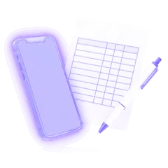
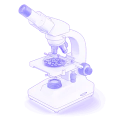
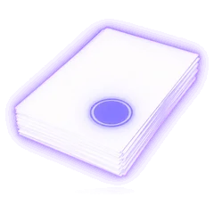
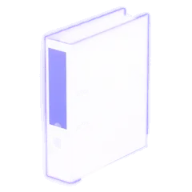

Анализ воды для организаций и производств
Исследуем воду из водопровода и собственной скважины, горячую воду, воду бассейнов, бутилированную, сточную и из водоёмов. Отбираем пробы на объекте и сравниваем результат с гигиеническими нормативами — протокол для папки производственного контроля.
- Микробиологический анализ воды — от 2 350 ₽
- Химический анализ — от 737 ₽ за показатель
- Общепит, производства, гостиницы, бассейны, объекты со своей скважиной
Что такое анализ питьевой воды
Анализ питьевой воды — лабораторное исследование пробы воды по микробиологическим, органолептическим, химическим, а при необходимости — паразитологическим и радиологическим показателям и сравнение результата с гигиеническими нормативами раздела III СанПиН 1.2.3685-21. Для организаций это часть производственного контроля: вода, которую используют для питья, приготовления пищи, мытья посуды и оборудования, должна отвечать требованиям к питьевой.
| Какую воду исследуем | водопроводную и из собственной скважины, горячую, воду бассейнов, бутилированную, сточную, из водоёмов и для рыбных хозяйств |
|---|---|
| Основные показатели | микробиология: общее микробное число, общие колиформные бактерии, E. coli, энтерококки, колифаги; органолептика и химия; паразитология и радиология — по назначению воды |
| Нормы для питьевой воды | общее микробное число — не более 50 КОЕ/см³; общие колиформные бактерии, E. coli, энтерококки и колифаги в 100 см³ — не допускаются (СанПиН 1.2.3685-21) |
| Как часто | по программе производственного контроля; для собственной скважины в месте водозабора — микробиология и органолептика 4 раза в год по сезонам, химия и радиология — 1 раз в год |
| Сколько стоит | микробиология — от 2 350 ₽, химия — от 737 ₽ за показатель, комплекс для водопроводной воды — от 4 330 ₽ — соберите расчёт |
| Что вы получите | протокол исследований по каждой пробе и вывод: соответствует ли вода нормативам |
Обновлено 11.11.2026 · Автор: Марианна Семерина, санитарный врач
Цены на анализ воды и расчёт
Нажмите «+» и укажите число проб или показателей — сумма появится внизу экрана. Расчёт общий для всех страниц раздела: его можно отправить вместе с заявкой.
Питьевая вода5 позиций · от 737 ₽
| Услуга | Единица | Цена | Расчёт |
|---|---|---|---|
| Анализ водопроводной воды | комплекс | от 4 330 ₽ | |
| Микробиологический анализ воды | комплекс | от 2 350 ₽ | |
| Химический анализ воды | элемент | от 737 ₽ | |
| Паразитологический анализ воды | комплекс | от 4 708 ₽ | |
| Анализ воды на радиацию | комплекс | от 8 236 ₽ |
По источнику и назначению6 позиций · от 2 080 ₽
| Услуга | Единица | Цена | Расчёт |
|---|---|---|---|
| Анализ воды из скважины | комплекс | от 5 500 ₽ | |
| Анализ бутилированной воды | комплекс | от 5 813 ₽ | |
| Анализ воды из бассейна | комплекс | от 4 582 ₽ | |
| Анализ воды из водоёма | комплекс | от 2 080 ₽ | |
| Анализ сточных вод | комплекс | от 5 600 ₽ | |
| Анализ воды для рыбных хозяйств | комплекс | от 12 124 ₽ |
Цена «от» — за комплекс показателей или, для химического анализа, за один показатель (в прайсе — «элемент»). Итог зависит от вида воды, набора показателей и числа точек отбора; точную сумму называем до выезда.
Какую воду исследуем
Набор показателей и периодичность зависят от того, откуда вода и для чего её используют:
| Вода | Кому нужно | Что исследуют и как часто |
|---|---|---|
| Водопроводная (питьевая) | общепит, пищевые производства, магазины с кулинарией, школы и детские сады, медицинские организации, гостиницы | микробиологические и органолептические показатели, химия — по программе производственного контроля. В общепите вода для производства, мытья посуды и оборудования и личной гигиены должна отвечать требованиям к питьевой (п. 13 СанПиН 2.3/2.4.4282-26) |
| Горячая | гостиницы, медицинские организации, спортивные объекты, бассейны | в каждой пробе — общие колиформные бактерии, E. coli, энтерококки и общее микробное число, колифаги — при превышении норматива; после аварий и ремонтов добавляют Legionella pneumophila (прил. 4 к СанПиН 2.1.3684-21) |
| Из собственной скважины | производства, склады, базы отдыха и другие объекты со своим водоснабжением | в месте водозабора: микробиологические, органолептические и обобщённые показатели — не менее 4 раз в год по сезонам, неорганические и органические вещества и радиология — не менее 1 раза в год (табл. 1 прил. 4 к СанПиН 2.1.3684-21) |
| Бассейн | бассейны фитнес-клубов, гостиниц, школ, аквапарки | общие колиформные бактерии, E. coli, колифаги, золотистый стафилококк, хлороформ — 1 раз в месяц; паразитология и синегнойная палочка — при неудовлетворительных результатах (прил. 6 к СП 2.1.4284-26) |
| Бутилированная | производители упакованной воды, офисы и сети, которые закупают воду | показатели безопасности для упакованной питьевой воды — по программе производителя или задаче проверки поставщика |
| Сточная, из водоёма, для рыбных хозяйств | предприятия со сбросом сточных вод, владельцы прудов и зон отдыха, рыбоводческие хозяйства | состав показателей — по требованиям к сбросу, назначению водоёма или условиям хозяйства; согласуем до выезда |
Микробиологические нормы питьевой воды
Питьевая вода должна быть безопасной в эпидемиологическом отношении. Нормативы — в разделе III СанПиН 1.2.3685-21:
| Показатель | Норматив | Что означает превышение |
|---|---|---|
| Общее микробное число (ОМЧ) | не более 50 КОЕ/см³ | общая обсеменённость воды: застой в сетях, загрязнённые фильтры или ёмкости |
| Общие колиформные бактерии (ОКБ) | отсутствие в 100 см³ | вода загрязнена извне или плохо обеззаражена |
| Escherichia coli (E. coli) | отсутствие в 100 см³ | свежее фекальное загрязнение — вода опасна для питья |
| Энтерококки | отсутствие в 100 см³ | фекальное загрязнение, в том числе давнее |
| Колифаги | отсутствие в 100 см³ | косвенный признак риска вирусного загрязнения |
Органолептические, химические и радиологические нормативы питьевой воды — в том же разделе III СанПиН 1.2.3685-21. В протоколе мы указываем норматив рядом с каждым результатом.
Как мы отбираем пробы воды
От отбора зависит, покажет ли анализ реальное качество воды. Работаем по ГОСТ 31942-2012 (пробы для микробиологического анализа) и ГОСТ Р 59024-2020 (общие требования к отбору проб):
- Точка отбора. Пробы берём там, где воду используют: кран на кухне, в цехе, у моечной ванны, на вводе в здание или у скважины — по программе производственного контроля.
- Подготовка крана. Для микробиологии используем металлический кран без насадок и шлангов; кран у скважины обеззараживаем обжигом. Перед отбором спускаем воду.
- Посуда. Микробиологические пробы — в стерильную посуду, химические — в отдельную подготовленную посуду. Напор во время отбора не меняем, под пробкой оставляем воздушный зазор.
- Маркировка и акт. Подписываем каждую ёмкость и заносим в акт адрес, точку, дату и время отбора.
- Доставка. Пробы везём в нашу лабораторию в термоконтейнере; микробиологическое исследование начинаем в день отбора.
Если вода не соответствует нормам
Если городская вода на вводе в норме, а на кухне или в цехе нет, причина почти всегда внутри здания: застой в редко используемых участках сети, загрязнённые фильтры и накопительные баки, старые смесители и шланги. У скважины — износ оголовка, попадание поверхностных вод, неработающее обеззараживание.
Если вы эксплуатируете систему водоснабжения, например собственную скважину, о результатах, не соответствующих нормативам по микробиологическим, паразитологическим, вирусологическим и радиологическим показателям, нужно сообщить в Роспотребнадзор: в течение 2 часов по телефону и 12 часов письменно (п. 78 СанПиН 2.1.3684-21).
- Найти участок сети, где ухудшается вода, — пробы в нескольких точках
- Заменить фильтры, промыть и обеззаразить баки и трубопроводы
- Заменить изношенные смесители, шланги и аэраторы
- Для скважины — проверить оголовок и систему обеззараживания
- Повторный анализ в тех же точках и запись в журнале ППК
Как сдать воду на анализ, в том числе из скважины
Организации не нужно самой везти пробу в лабораторию. Специалист приезжает на объект в Москве или области и отбирает воду там, где её используют: из крана на кухне или в цехе, на вводе в здание или у скважины. Пробы везём в нашу лабораторию в термоконтейнере, микробиологическое исследование начинаем в день отбора.
- Химический анализ — от 737 ₽ за показатель, микробиологический — от 2 350 ₽.
- Воду из собственной скважины проверяют 4 раза в год, по сезонам.
- В протоколе рядом с каждым результатом стоит норматив СанПиН 1.2.3685-21 — документ кладут в папку производственного контроля.
- Точную сумму называем до выезда: она зависит от вида воды, набора показателей и числа точек отбора.

ЗаявкаОпишите объект и источник воды или пришлите программу производственного контроля. Согласуем показатели, точки и стоимость.
ВыездСпециалист приезжает с подготовленной посудой — стерильной для микробиологии и отдельной для химии.
Отбор пробОтбираем пробы в согласованных точках, маркируем ёмкости и составляем акт отбора.
ИсследованиеДоставляем пробы в нашу лабораторию с соблюдением температуры и сроков и исследуем на согласованные показатели.
ПротоколПередаём протокол и разбор: что в норме, что нет и что сделать. Документ — для папки производственного контроля.
Кто подготовил материал
Нормативная база (проверено 11.11.2026)
Документы о производственном контроле, дезинсекции и дератизации — в разделе «Нормативная база».
- СанПиН 1.2.3685-21 «Гигиенические нормативы и требования к обеспечению безопасности и (или) безвредности для человека факторов среды обитания» — раздел III, нормативы качества питьевой воды (КонсультантПлюс)
- СанПиН 2.1.3684-21 «Санитарно-эпидемиологические требования к содержанию территорий городских и сельских поселений, к водным объектам, питьевой воде и питьевому водоснабжению…» — пп. 77–79 и приложение № 4 (официальный текст)
- СП 2.1.4284-26 — приложение № 6 «Кратность проведения лабораторных исследований (испытаний) при осуществлении производственного контроля воды бассейнов» (Гарант)
- СанПиН 2.3/2.4.4282-26 «Санитарно-эпидемиологические требования к организации общественного питания населения» (утв. 02.06.2026 № 18, действуют с 01.09.2026 взамен СанПиН 2.3/2.4.3590-20) — п. 4 (производственный контроль на принципах ХАССП, включая лабораторные исследования) и п. 13 (вода для производственных целей) (Гарант)
- ГОСТ 31942-2012 «Вода. Отбор проб для микробиологического анализа» (Росстандарт)
- ГОСТ Р 59024-2020 «Вода. Общие требования к отбору проб» (Росстандарт)
- СП 1.1.1058-01 «Организация и проведение производственного контроля за соблюдением санитарных правил и выполнением санитарно-противоэпидемических (профилактических) мероприятий» — п. 2.5 (Гарант)
Связанные услуги и материалы
Вопросы об анализе воды
Микробиологический анализ — от 2 350 ₽, химический — от 737 ₽ за показатель, анализ водопроводной воды — от 4 330 ₽, воды из скважины — от 5 500 ₽, воды бассейна — от 4 582 ₽. Соберите расчёт или опишите задачу — назовём сумму до выезда.
С периодичностью из программы производственного контроля. Если у вас собственная система водоснабжения, например скважина, производственный контроль ведут по программе контроля качества питьевой воды (п. 77 СанПиН 2.1.3684-21), а в месте водозабора микробиологию и органолептику исследуют не реже 4 раз в год по сезонам.
Общее микробное число, общие колиформные бактерии, E. coli, энтерококки и колифаги. В питьевой воде общее микробное число — не более 50 КОЕ/см³, остальные показатели в 100 см³ не допускаются (СанПиН 1.2.3685-21).
Да, если он предусмотрен программой производственного контроля. В общепите вода для приготовления пищи, мытья посуды и оборудования и личной гигиены должна отвечать требованиям к питьевой (п. 13 СанПиН 2.3/2.4.4282-26), а ухудшиться она может и во внутренних сетях здания.
По приложению № 6 к СП 2.1.4284-26: общие колиформные бактерии, E. coli, колифаги и золотистый стафилококк — 1 раз в месяц; остаточный хлор, pH и температуру — перед началом работы и далее каждые 4 часа; мутность, цветность и запах — 1 раз в рабочие часы. Паразитологию и синегнойную палочку исследуют при неудовлетворительных результатах по ОКБ и E. coli.
Для протокола по производственному контролю пробу отбирает специалист лаборатории: стерильная посуда, металлический кран без насадок, слив воды перед отбором, постоянный напор, маркировка и доставка в термоконтейнере. Так работают ГОСТ 31942-2012 и ГОСТ Р 59024-2020.
Да, для организаций со своим водоснабжением. В месте водозабора исследуем микробиологические, органолептические и обобщённые показатели, неорганические и органические вещества и радиологию — с кратностью из приложения № 4 к СанПиН 2.1.3684-21.
Найти участок, где вода ухудшается: пробы на вводе и в точках использования, проверка фильтров, баков и смесителей. После промывки и обеззараживания — повторный анализ. Если вы эксплуатируете систему водоснабжения, о несоответствии нужно сообщить в Роспотребнадзор (п. 78 СанПиН 2.1.3684-21).
Пробу не нужно никуда везти. Мы выезжаем на объекты Москвы и Подмосковья, сами отбираем воду по ГОСТ 31942-2012 и ГОСТ Р 59024-2020 и доставляем её в нашу лабораторию. Работаем с организациями: общепитом, производствами, гостиницами, бассейнами и объектами со своей скважиной.
Один подрядчик — все санитарные задачи
Пест-контроль, санитарная обработка, лабораторный контроль и документы к проверке Роспотребнадзора для организаций Москвы и области.


Осмотрим объект за один выезд и рассчитаем всё вместе — с общим графиком работ и комплектом документов.
Рассчитать комплекс


Нам доверяют свои объекты
Рестораны и пищевые производства, магазины, отели, фармпроизводства, склады и офисы. Работаем с объектами любого типа и размера — от одного кафе до сети магазинов.
- Шоколадная фабрика
- Пивоварня
- Сеть пиццерий
- Сеть сэндвич-баров
- Фармпроизводство
- Фармпроизводство
- Рыбная продукция
- Сеть пекарен
- Фармпроизводство
- IT-компания
- Гипермаркеты
- Отель
- Фитнес-клубы
- Склад
- Склады продуктов
- Обследование 0 ₽Станьте нашим клиентом
Проверим воду на вашем объекте
Опишите объект и источник воды или пришлите программу производственного контроля — перезвоним, согласуем показатели и назовём стоимость.
- Микробиология воды — от 2 350 ₽
- Отбор проб по ГОСТ 31942-2012
- Москва и Московская область